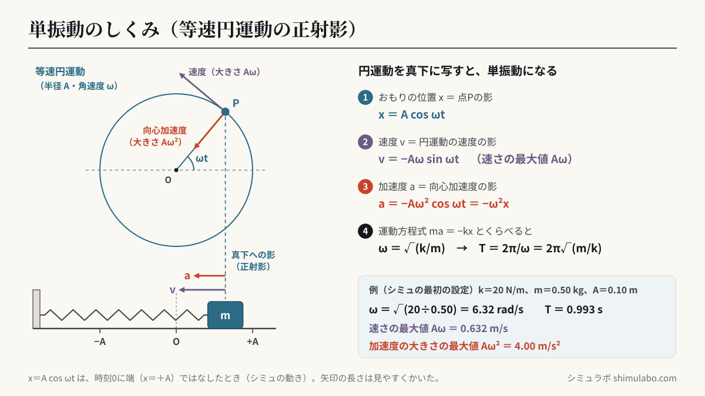
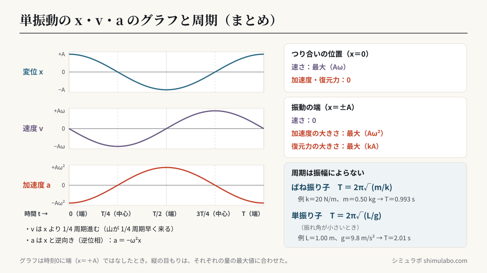

このシミュレーションでわかること
高等学校「物理」の「(1) 様々な運動」(ｳ)円運動と単振動 ㋑単振動（学習指導要領 平成30年告示）で学ぶ内容です。内容の取扱いでは「単振動をする物体の変位，速度，加速度及び復元力」を扱い、具体例として「ばね振り子と単振り子」を扱うことになっています。解説では、単振動を等速円運動と関連付けて扱うことや、単振り子の長さと周期との関係を調べる実験が例として挙げられています。このシミュレーションは、その作図と実験を画面の上で再現します。
ばね定数 k・質量 m・振幅 A を変えると、おもりの単振動と、それに対応する等速円運動（上の円）が同時に動き、x・v・a の時間変化のグラフと、運動エネルギー・弾性力による位置エネルギーの棒グラフがその場で描かれます。単振り子に切り替えると、近似式 T₀＝2π√(L/g) どおりに動く振り子（灰色）と、運動方程式を数値積分して求めた実際の振り子を重ねて比べられます。
授業での使い方
- 導入：ばね振り子を動かし、上の円をまわる点の「影」（正射影）が、おもりとぴったり同じ動きをすることを観察させます。解説にある「投影装置などによる観察」の代わりになります。おもりは指やペンでつかんで引っぱり、はなして振動させることもできます。
- 展開：x・v・a のグラフを縦にならべ、山の位置のずれ（位相のずれ）を読み取らせます。グラフの縦の点線は1/4周期ごとです。振幅を変えても周期が変わらないこと、質量を4倍にすると周期が2倍になることを確かめます。単振り子に切り替えて、長さと周期の関係を調べる実験の予想や結果の確認にも使えます。
- まとめ：エネルギーの棒グラフで、運動エネルギーと位置エネルギーの和が一定であること（物理基礎の力学的エネルギー保存）を確かめます。単振り子の振れ角を大きくすると、近似式の振り子と実際の振り子が少しずつずれていき、T＝2π√(L/g) が「振れ角が小さいときの式」であることがわかります。
生徒への問いの例：
- おもりの速さが最大になるのはどの位置でしょう。そのとき、加速度と復元力はどうなっているでしょう。
- おもりの質量を4倍にすると、周期は何倍になるでしょう。ばね定数を4倍にしたときはどうでしょう。
- 単振り子の振れ角を60°にすると、周期は T₀＝2π√(L/g) より長くなるでしょうか、短くなるでしょうか。それはなぜでしょう。
しくみ・解説






図はタップすると大きく表示されます。授業のプリント・スライド・板書計画に自由に使えます（出典「シミュラボ」とページのURLを添えてください）。
用語の意味
- 単振動とは、等速円運動をする点を直径上に正射影したときに見られる、直線上の往復運動です。
- 復元力とは、物体をつり合いの位置にもどす向きにはたらき、大きさが変位に比例する力（F＝−Kx、K は正の定数）です。
- 振幅 A とは、つり合いの位置（振動の中心）から振動の端までの距離です。
- 周期 T とは1回の振動にかかる時間〔s〕で、振動数 f とは1秒あたりの振動の回数〔Hz〕です（f＝1/T）。
- 角振動数 ω とは、単振動に対応する等速円運動の角速度〔rad/s〕で、ω＝2π/T＝2πf です。
- 位相とは、振動がどの段階にあるかを表す角 ωt（初期位相を含めて ωt＋θ₀）です。
変位・速度・加速度の式と位相のずれ
速さの最大値 vmax＝Aω（つり合いの位置） 加速度の大きさの最大値 amax＝Aω²（振動の端）
振動の中心を時刻0に正の向きに通過するとき、変位は x＝A sin ωt と表せます。速度 v は x より位相が π/2（1/4周期）進み、加速度 a は x と逆位相（位相が π ずれる）です。a＝−ω²x なので、加速度はいつも変位と逆向きで、変位に比例します。このシミュレーションでは、おもりを端まで引いてからはなすので、x＝A cos ωt（初期位相 π/2）のグラフになります。
| おもりの位置 | 速さ | 加速度の大きさ | 復元力の大きさ |
|---|---|---|---|
| つり合いの位置（x＝0） | 最大（Aω） | 0 | 0 |
| 振動の端（x＝±A） | 0 | 最大（Aω²） | 最大（kA） |
ばね振り子と単振り子の周期
単振り子：復元力 −mg sinθ ≒ −(mg/L)x（θ が小さいとき）→ ω＝√(g/L) → T＝2π√(L/g)
計算例1（ばね振り子）：k＝20 N/m、m＝0.50 kg のとき、T＝2π√(0.50÷20)＝2π×0.158＝0.993 s。振幅 A＝0.10 m なら、ω＝√(20÷0.50)＝6.32 rad/s、速さの最大値 Aω＝0.632 m/s、加速度の大きさの最大値 Aω²＝4.00 m/s²、力学的エネルギー ½kA²＝0.100 J です（このシミュレーションの初期設定）。
計算例2（単振り子）：長さ L＝1.00 m、g＝9.8 m/s² のとき、T＝2π√(1.00÷9.8)＝2.01 s。周期を2倍にするには、長さを4倍にします。周期の式には、おもりの質量も振幅も入っていません。
ばね振り子の周期の早見表（T＝2π√(m/k)）：
| おもりの質量 m | k＝10 N/m | k＝20 N/m | k＝40 N/m | k＝80 N/m |
|---|---|---|---|---|
| 0.10 kg | 0.63 s | 0.44 s | 0.31 s | 0.22 s |
| 0.25 kg | 0.99 s | 0.70 s | 0.50 s | 0.35 s |
| 0.50 kg | 1.40 s | 0.99 s | 0.70 s | 0.50 s |
| 1.00 kg | 1.99 s | 1.40 s | 0.99 s | 0.70 s |
| 2.00 kg | 2.81 s | 1.99 s | 1.40 s | 0.99 s |
単振り子の周期の早見表（g＝9.8 m/s²、振れ角が小さいとき）：
| 振り子の長さ L | 周期 T＝2π√(L/g) | 振動数 f＝1/T |
|---|---|---|
| 0.25 m | 1.00 s | 1.00 Hz |
| 0.50 m | 1.42 s | 0.70 Hz |
| 1.00 m | 2.01 s | 0.50 Hz |
| 1.50 m | 2.46 s | 0.41 Hz |
| 2.00 m | 2.84 s | 0.35 Hz |
振れ角が大きいときの単振り子（近似のずれ）
T＝2π√(L/g) は、sinθ≒θ と近似できる「振れ角が小さいとき」の式です。振れ角が大きいと、復元力 mg sinθ が近似の mgθ より小さくなるので、周期は少し長くなります。このシミュレーションでは、運動方程式 d²θ/dt²＝−(g/L) sinθ をルンゲ＝クッタ法（4次）で数値積分して実際の周期を求め、近似式の値とくらべています（数値積分の結果は、楕円積分による厳密な値と小数第4位まで一致することを確かめています）。
| 振れ角 θ₀ | T÷T₀ | 近似式からのずれ | 長さ1.00mの振り子の周期（T₀＝2.007 s） |
|---|---|---|---|
| 5° | 1.0005 | ＋0.05% | 2.008 s |
| 10° | 1.0019 | ＋0.19% | 2.011 s |
| 20° | 1.0077 | ＋0.77% | 2.022 s |
| 30° | 1.0174 | ＋1.74% | 2.042 s |
| 45° | 1.0400 | ＋4.00% | 2.087 s |
| 60° | 1.0732 | ＋7.32% | 2.154 s |
| 90° | 1.1803 | ＋18.03% | 2.369 s |
振れ角10°では0.2%ほど、30°では1.7%ほどのずれなので、授業の実験（振れ角10°前後）では近似式で十分です。
単振動の力学的エネルギー
単振り子：½mv²＋mgL(1−cosθ)＝mgL(1−cosθ₀)（一定）
おもりが端にあるとき運動エネルギーは0で位置エネルギーが最大、つり合いの位置を通るとき位置エネルギーが0で運動エネルギーが最大です。
このシミュレーションで単純にしていること
- 摩擦や空気の抵抗は考えていません（振幅はへりません）。ばねと糸の質量も考えていません。重力加速度は g＝9.8 m/s² です。
- ばね振り子は、なめらかな水平面の上で振動するものとしています。鉛直につるしたばね振り子も、つり合いの位置を中心に同じ周期 T＝2π√(m/k) で単振動します。
- 単振り子は、近似式の周期で3周期分（3T₀）動くごとに、最初の位置からやり直して表示します。近似式の振り子とのずれがたまっていく様子を、くり返し見るためです。
- グラフの縦の目もりは、それぞれの量の最大値に合わせています（x・v・a の大きさを、そのまま比べるものではありません）。
参考
- 文部科学省「高等学校学習指導要領（平成30年告示）解説 理科編 理数編」物理 (1) 様々な運動 (ｳ)円運動と単振動（文部科学省 学習指導要領のページ）
- 高等学校「物理」の教科書（数研出版、東京書籍、啓林館、第一学習社など）の単振動の章
引用・転載について
本ページのシミュレーション結果・数値は、出典を明記いただければブログ・ニュース記事・SNS・授業や社内資料への引用を歓迎します。事前連絡は不要です。
出典：シミュラボ「単振動シミュレーター（ばね振り子・単振り子）」 https://shimulabo.com/sims/tan-shindou/よくある質問
- 単振動の周期は、なぜ振幅によらないのですか？
- 復元力が変位に比例する（F＝−kx）ので、振幅を2倍にすると復元力も2倍になり、速さも2倍になります。進む距離が2倍でも速さが2倍なので、1往復にかかる時間は変わりません。式でも T＝2π√(m/k) に振幅 A は入っていません。
- ばね振り子の周期の求め方は？
- T＝2π√(m/k)（m：おもりの質量〔kg〕、k：ばね定数〔N/m〕）で求めます。例えば k＝20 N/m、m＝0.50 kg なら T＝2π√(0.50÷20)≒0.99 s です。質量を4倍にすると周期は2倍、ばね定数を4倍にすると周期は1/2倍になります。
- 単振り子の周期の式 T＝2π√(L/g) は、いつでも使えますか？
- 振れ角が小さいとき（sinθ≒θ と近似できるとき）の式です。振れ角が大きいと実際の周期は少し長くなり、30°で約1.7%、60°で約7.3%、90°で約18%長くなります。授業の実験のように振れ角が10°前後なら、ずれは0.2%ほどです。
- 単振動で、速さが最大になる位置と、加速度が最大になる位置はどこですか？
- 速さが最大（Aω）になるのはつり合いの位置（x＝0）で、そのとき加速度と復元力は0です。加速度の大きさが最大（Aω²）になるのは振動の端（x＝±A）で、そのとき速さは0です。
- 鉛直につるしたばね振り子の周期は、水平のときと同じですか？
- 同じです。重力は、つり合いの位置（ばねが mg/k だけのびた位置）をずらすだけで、そこからの変位に対してはたらく力は −kx のままです。そのため周期は T＝2π√(m/k) になります。
- 単振動と等速円運動は、どのような関係ですか？
- 半径 A・角速度 ω の等速円運動をする点を、直径上に正射影（真横や真上から光を当てたときの影）すると、振幅 A・角振動数 ω の単振動になります。単振動の速度・加速度は、円運動の速度・向心加速度を正射影したものです。